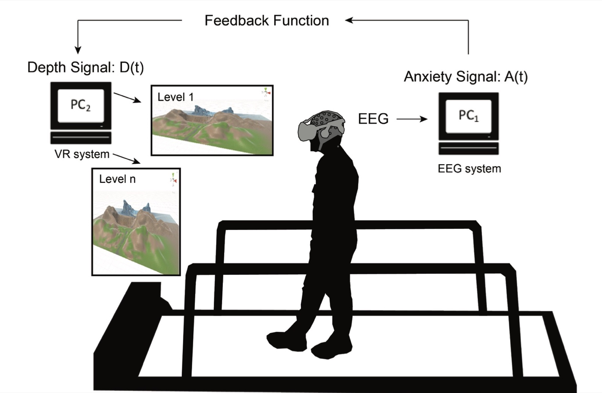
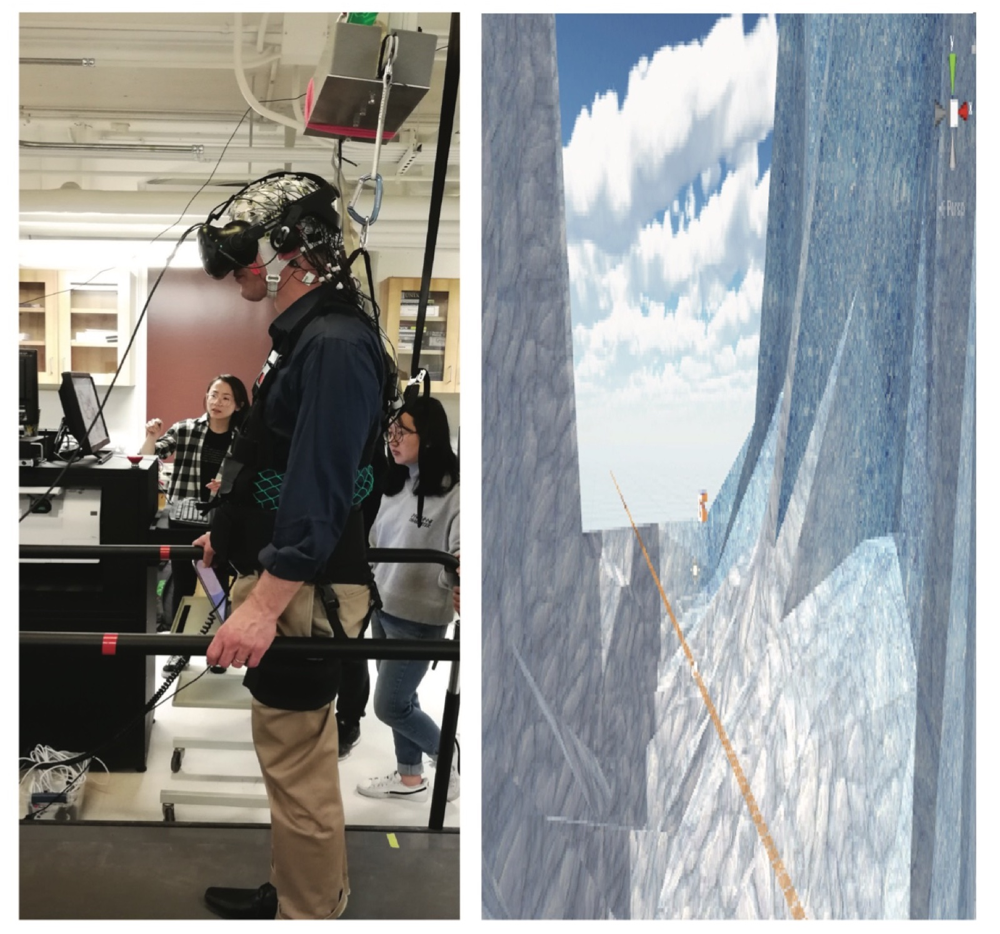
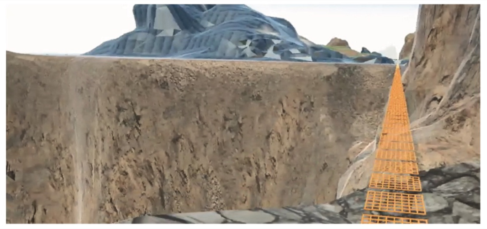
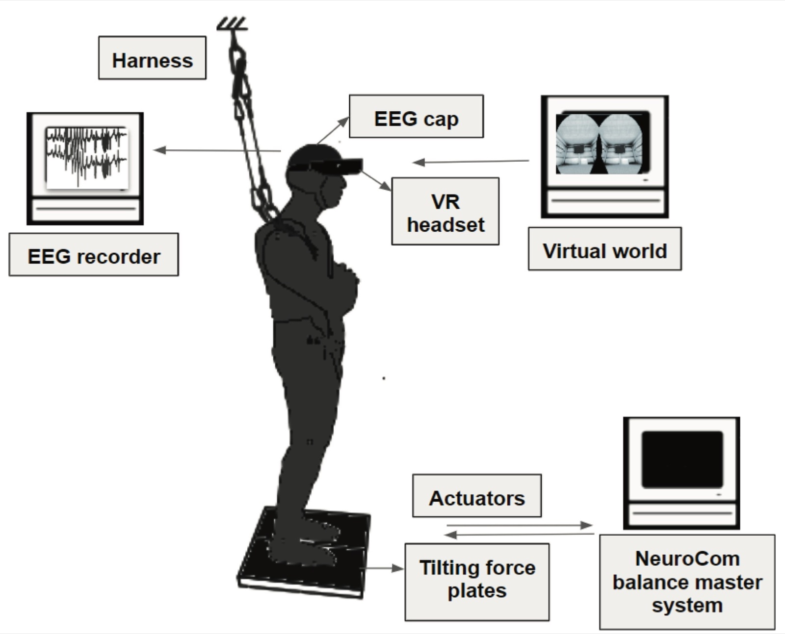
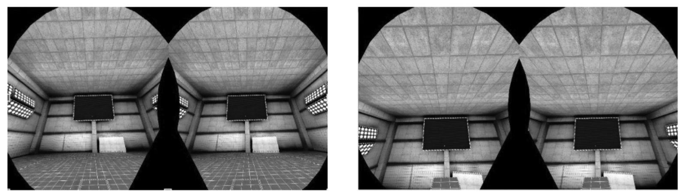
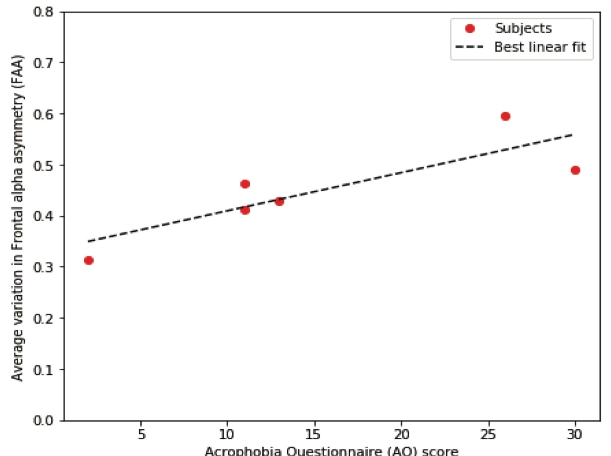
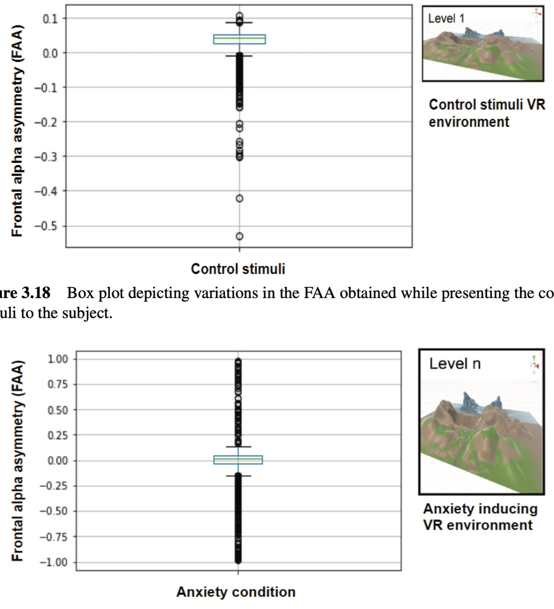

Abstract
Falls are one of the prominent reasons inducing accidental fatality and fractures among the elder population and those with movement disorders. The proposed work is to study and attempt to alleviate the fear of falling in humans using experimental setups designed in VR. This chapter is primarily aimed at establishing and understanding the underlying fluctuations relative to anxiety in human postural control using immersive virtual conditions. We review the utilization of VR for evaluating the effects of fear of falling on balance and gait function. Further, we examine the potential for VR neurorehabilitation aimed at ameliorating fall-related anxiety in adults. We majorly discuss this in the chapter through analyzing real-time neurological feedback, measured via electroencephalogram (EEG) signals, in two experimental designs devised at studying neural responses relative to human postural threats, namely, visual cliffs while walking in a virtual world and induced randomized height changes and perturbations in a quiet standing environment. This framework incorporating virtual environments for understanding postural challenges is a step forward towards a smart and intuitive brain-computer interface (BCI) system that detects and dynamically adapts to the environment analogous to the real-time anxiety state of humans. Furthermore, through the integration of smart and intuitive BCI systems, potential breakthroughs in both physical and psychological recovery after falls may be feasible through greater access to personalized medical treatment and development of novel neurorehabilitation therapies aimed at treating excessive fear of falling, and hence, a potential source of fall risks, especially among older adults and those suffering with movement disorders, such as Parkinson’s disease.
Core contributions
- 1A review of VR for fear of fallingHow VR has been used to study balance, gait and anxiety, and to treat phobias and movement disorders.
- 2Visual cliffs while walkingA treadmill VR world whose cliffs deepen or flatten in response to the walker’s EEG.
- 3Heights while standingRandom virtual heights and depths up to 7.5 m, combined with real platform tilts.
- 4A full EEG pipelineFiltering, ICA cleaning of artifacts and frontal alpha asymmetry as a live measure of anxiety.
- 5EEG tracks fear of heightsChanges in frontal alpha asymmetry matched people’s own acrophobia scores (R² = 0.71).
- 6A research agendaOpen problems in artifact removal, brain connectivity, low-rank models, topology and anxiety feedback.
Two VR setups
1Visual cliffs while walking
People walk at their own pace on a self-paced C-MILL treadmill while wearing an HTC Vive headset and a 64-channel EEG cap. The virtual world is a narrow path over cliffs and mountains. As the walker’s estimated anxiety rises, the cliffs become shallower; when they are calm, the cliffs deepen. The cliffs are reshaped smoothly along cubic Bézier splines, and a level path serves as the neutral baseline.


2Heights while standing
People stand on a NeuroCom force plate, secured by a harness, while the virtual podium rises to 2.5, 5 or 7.5 m or the floor around it drops by the same amounts, in random order. In half of the trials, the plate also tilts their toes down by 10 degrees at each height.

Show the virtual environment (Figure 3.9)

3Measuring anxiety
EEG is synchronized with the VR, band-pass filtered, and split by independent component analysis; components from eye movements, muscles, the heart and line noise are removed. From the clean signal we compute frontal alpha asymmetry (FAA), the difference in log alpha power between the left (F3) and right (F4) frontal channels, a known marker of withdrawal and anxiety. Heart rate and the Acrophobia Questionnaire serve as checks.
Results
- Walking: in a pilot with one young adult, FAA swung much more widely in the frightening terrain than in the neutral one.
- Standing: across six people, the average change in FAA rose with their self-reported fear of heights (R² = 0.71, p = 0.04), and more so in trials with tilts (R² = 0.79, p = 0.01).
- Up is scarier than down: FAA changed more at 7.5 m height than at 7.5 m depth, in every anxiety group.

Show the walking pilot (Figures 3.18 and 3.19)

Open questions
- Procedural artifact removal: a systematic, ideally automatic, way to strip artifacts, for example a CNN trained on scalp maps (later developed as DeepIC-virtual).
- How anxiety moves through the brain: regression and low-rank models of how each channel drives the others, and topological tools such as persistent homology to find robust connectivity.
- A model of anxiety feedback: a simple dynamical model linking anxiety to cliff depth, whose parameters could capture how quickly a person adapts.
- Lower cost: head-mounted displays and just two frontal EEG channels make such systems far cheaper and better suited to wireless, wearable use.
BibTeX
@incollection{kaur2020virtual,
title = {Virtual Reality and Movement Disorders},
author = {Kaur, Rachneet and Hernandez, Manuel E and Sowers, Richard},
booktitle = {Virtual Reality: Recent Advancements, Applications and
Challenges},
editor = {Bozgeyikli, Lila and Bozgeyikli, Ren},
pages = {55--98},
publisher = {River Publishers},
year = {2020},
isbn = {9788770221412},
url = {https://ieeexplore.ieee.org/document/9227159}
}Acknowledgments
We would like to thank all the subjects who collaborated with their time and data for the study, and JUMP ARCHES for financial support. This work would not have been possible without the support of the Illinois Geometry Laboratory of the Department of Mathematics at the University of Illinois.